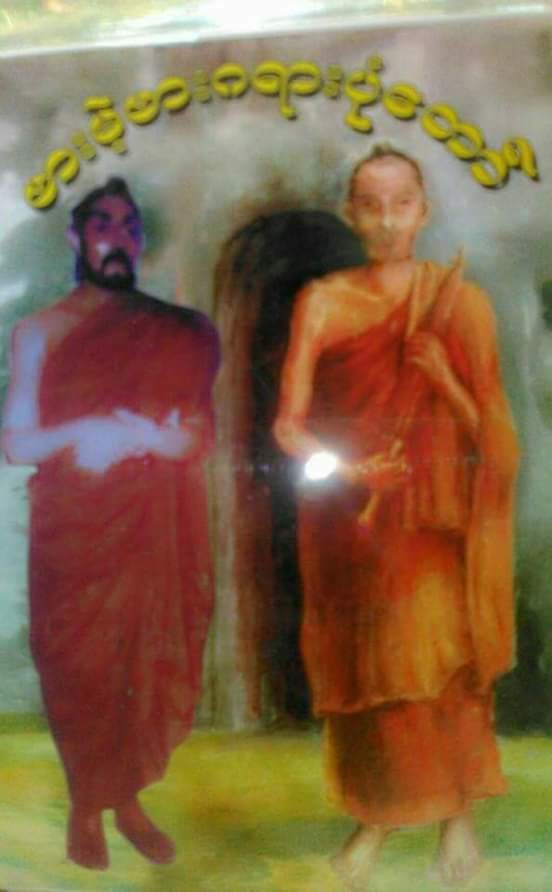
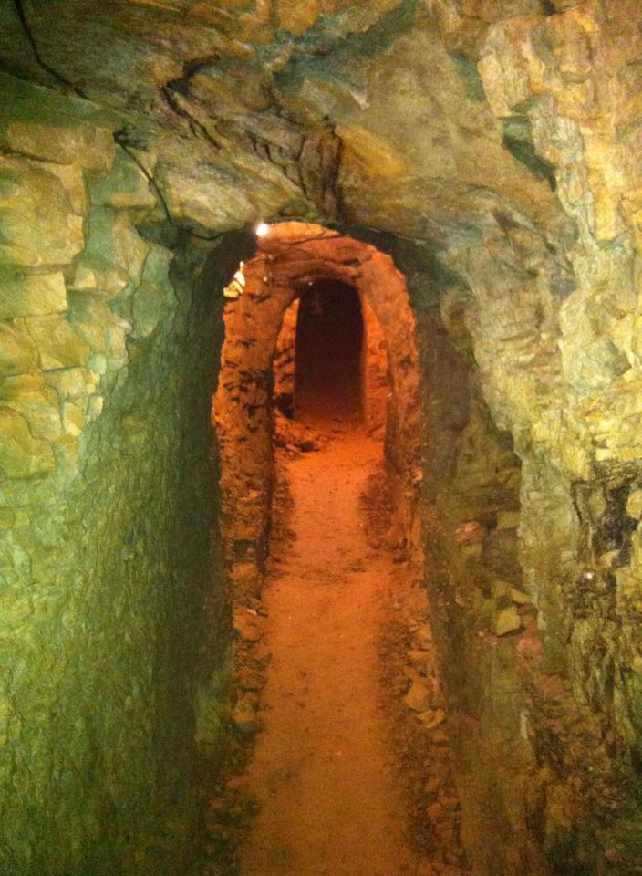
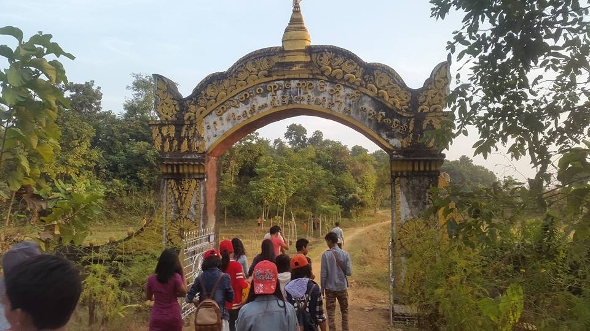
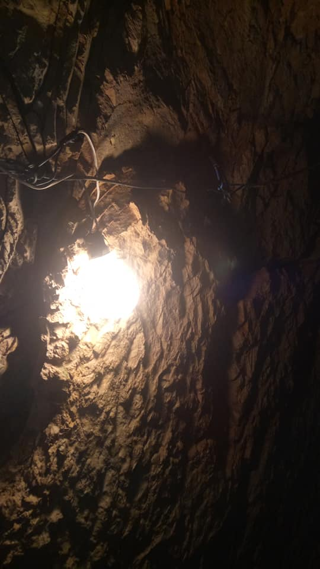
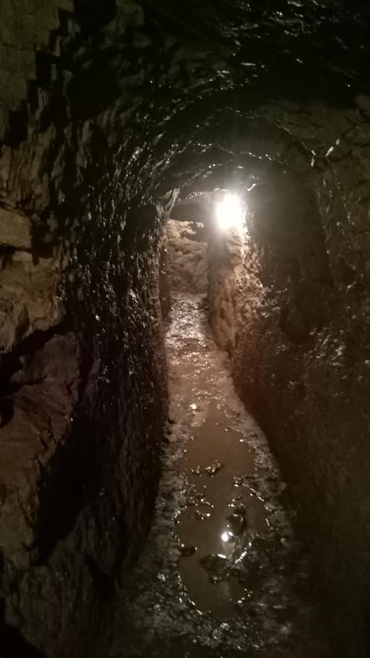

About the barless bar
The childhood of the barbarians
She is a poor girl.
A villager from Dhammaraj village in Mrauk-U town.
From an early age
I made a living by renting goats for others.
Therefore
She will
The name given to them by their parents has disappeared.
She is often referred to as the "Goat Shepherd".
Gradually, she became a virgin.
14/15 Becoming an Adolescent.


One day
I was so tired that I fell asleep in the shade of a goat herd. I slept every day, so I slept soundly.
It's time
The guardian deity of Nyaungbin has descended
He fell in love with her in a dream.
For starters
She still denies it.
In the days to come
Every time I fell asleep, I fell in love with her.
Gradually, she became happy too.
So she became pregnant.
The father has nothing to show for it.
It is not in accordance with the customs of the Rakhine people. So they drove her out of the village.
A baby boy was born outside the village.
There is no father.
D

Why do you call your father in Indian language (for example, Sanda Munibaba)?
In northern Rakhine State
That's what they call it.
Southerners call it bar.
Therefore
The goat herdsman's son is often referred to as the Barless Man.
D
She and her goat companion;
Her cousin gave birth to a baby girl just like her.
But ..
That girl was not as unlucky as her. A compassionate father has given birth to a baby boy.


That is why people call him Barca.
Bar = Father
Kara = (Pali broken word, original Pali script) creator
Barkara = a father who has made
It's time to go to school
They went to the monastery. Their father, Rukkha Soe Nat, educated them in secret.
Early in the morning, the abbot told Taung Phyu Inn to run for seven weeks. At 7 weeks, I found a pile of dog
dung. The dog was asked to feed the two of them.
I ate with confidence in the teacher's words. Varkala is not disgusting. I ate little because I was afraid of
the abbot. read more